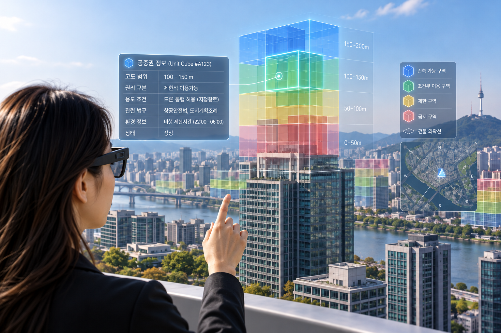

특허 제10-3027937호 전용실시권 설정등록… 현실·가상 공간을 연결하는 디지털 공중 인프라 기술 기반 강화

스마트 글래스 기반 공중권 시각화 개념도
디지털 공중 인프라(Digital Sky Infrastructure) 기업 스카이큐브(대표이사 김시환)는 「스마트 글래스 및 이동체 기반 공중권 시각화 및 통제 시스템과 그 방법」(특허 제10-3027937호)에 대한 전용실시권 설정등록을 완료하였습니다.
이 특허의 핵심은 눈에 보이지 않는 공중공간의 권리와 이용조건을 시각적으로 확인하고 상호작용할 수 있도록 하는 기술입니다.
현실 공간을 정육면체 형태의 단위큐브(Unit Cube)로 구분하고, 각 단위큐브에 위치·권리·정책·환경정보를 연결합니다. 또한 현실 공간과 가상 공간의 대응 단위큐브를 중첩 매핑하여 두 공간의 정보 상태를 병렬로 유지합니다.
사용자는 스마트 글래스를 통해 특정 공간에 적용되는 공중권과 이용조건을 직관적으로 확인하고 상호작용할 수 있습니다. 나아가 현실·가상 공간의 정보 연동을 통해 공간정보의 변경사항을 반영하는 기술적 기반을 제공합니다.
쉽게 말해, 건물 위의 보이지 않는 공간을 바라보면서 그 공간에 어떤 권리가 존재하고, 어떤 이용조건이 적용되는지를 디지털 정보로 확인하는 방식입니다.
이 기술은 향후 스마트시티, 공간정보 관리, 증강현실(AR) 기반 서비스 등 다양한 분야에서 활용될 수 있으며, 이동체의 공간정보 인식 기술과도 연계할 수 있습니다.
스카이큐브는 이번 전용실시권 확보를 바탕으로 Q-Block®을 중심으로 한 단위큐브 기반 공간정보 기술과 공중권 시각화·통제 기술의 연계를 강화하고, 현실 공간의 권리와 이용조건을 디지털 환경에서 이해하고 활용할 수 있는 인프라 구축을 추진할 계획입니다.